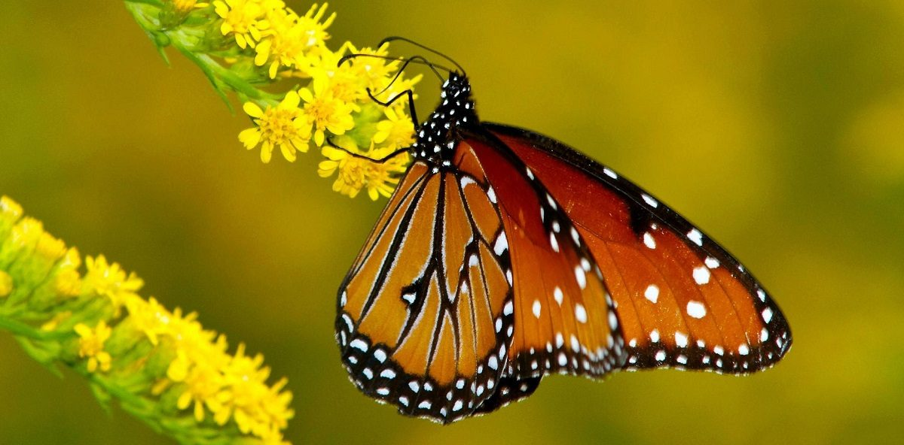

Las mariposas tienen una función muy importante en nuestro planeta, puesto que ellas son unas de las encargadas de polinizar muchas flores, incluso con una enorme distancia entre una y otras. Las alas de las mariposas varían según la especie de la que hablemos, puesto que algunas tendrán dos alas, pero otras tendrán cuadro
